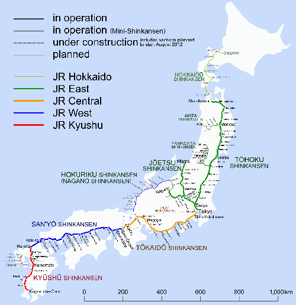

Sinkanszen - Japán gyprsvasút
Vasúti vonalai
| Vonal |
Induló állomás |
Érkezõ állomás |
Hossz |
Évi utasszám |
| Tókaidó Sinkanszen |
Tokió |
Sin-Oszaka |
515,4 km |
320.000 |
| Szanjó Sinkanszen |
Sin-Oszaka |
Hakata |
553,7 km |
63 432 000 |
| Tóhoku Sinkanszen |
Tokió |
Sin-Aomori |
674,9 km |
84 833 000 |
| Dzsóecu Sinkanszen |
Ómija |
Nígata |
269,5 km |
38 29 000 |
| Nagano Sinkanszen |
|
|
|
|
| (Hokuriku Sinkanszen) |
Takaszaki |
Nagano |
117,4 km |
135 000 |
| Kjúsú Sinkanszen |
Hakata |
Kagosima-Csuó |
256,8 km |
4 184 000 |
A sinkanszen vasúti vonalainak térképe
